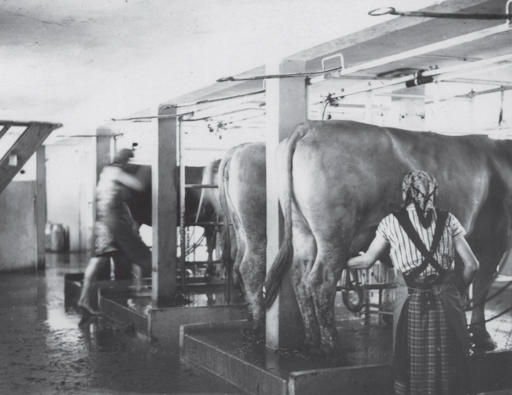

Where mighty oaks and alder trees once thrived, and Ljubljana’s peasants toiled in the meadows, in the fall, a tractor now hums a victorious tune—conquering the marshes of the Ljubljana Moor.(SI ZAL LJU 476, Mestna ekonomija [Municipal agricultural estate] Jesenkovo, fasc.15, fol. 170, „Mestna ekonomija Jesenkovo 88,“ p. 2. [undated, probably 1947 – 1948])
Yet, in reality, there was no such victory. The socialisation of post-war agriculture in Slovenia stalled halfway. While private land ownership remained dominant, socialist agricultural enterprises emerged, often leasing land from locals who gradually abandoned farming. The foundation of the socialist agricultural sector was the establishment of a General People’s Property Fund, which, after wartime confiscations and two agrarian reforms (1945/46 and 1953), controlled 2,742 hectares—16.8% of the total land on the Ljubljana Moor. Peasant labour cooperatives (“kolkhozes”) failed to deliver the expected results and soon disappeared.
The development of agricultural estates on the Ljubljana Moor was closely tied to Ljubljana’s industrialisation and the general scarcity of resources at the time. The most significant estate was Jesenkovo, which in 1948 managed 114 hectares. It engaged in diverse activities, from vegetable and grain cultivation to cattle and pig farming, the latter posing serious environmental risks. Labour shortages were a persistent issue, as harsh working conditions and poor living standards made retention difficult. Many fields were unsuitable for modern mechanisation due to the marshy terrain, and heavy rainfall often made harvesting impossible.
Significant changes arrived in the late 1950s. By 1959, agricultural investments in Yugoslavia accounted for 16% of total gross investments. On the Ljubljana Moor, this led to the first serious pedological, hydrotechnical, and agrotechnical studies and experiments after the war. That same year, several social agricultural enterprises and cooperatives merged into Kmetijsko posestvo Barje (Barje Agricultural Estate), which by 1963 managed 2,487 hectares.
For the first time since the war, estate’s management recognised the natural limitations of the marshland, leading to a specialisation in livestock farming. The estate became by early 1960s a major milk supplier for Ljubljana, covering up to 20% of the city’s daily demand. Despite improved working conditions, labour shortages persisted, and the enterprise remained financially unviable. Maintaining farmland in the marsh was costly, and animal feed posed a particular challenge, as marsh horsetail (Equisetum palustre)—a toxic plant—proved impossible to eradicate.
